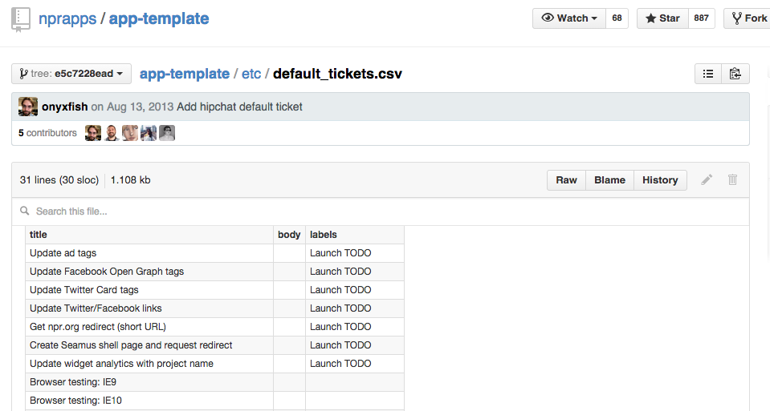
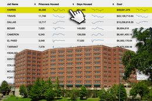
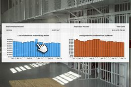
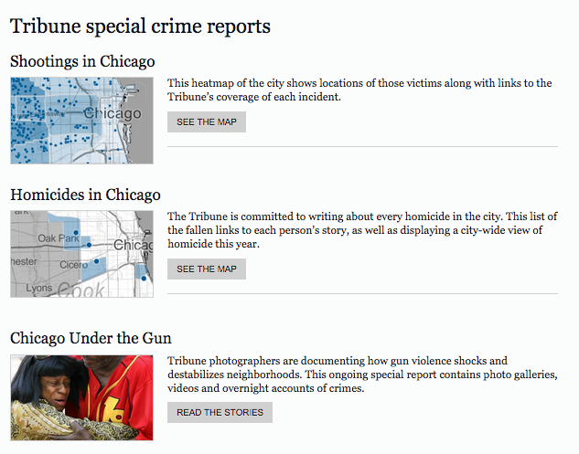

Packaging your apps
Dan Hill
/
@DanHillReports
We need your work!
“Demos not memos"
MVP: Minimum Viable Product
Checklist
Edit text
Test on all devices

Things will fall apart (probably)
“Fail fast and iterate"
Always be enhancing


Choose the best for your story

What tool do I want make?
What story do I want to tell?
What tool do I want make
What story do I want to tell?